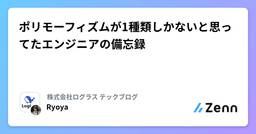
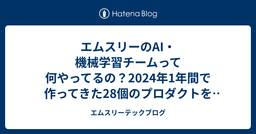
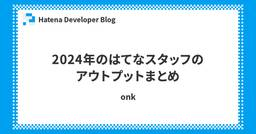
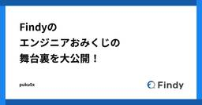
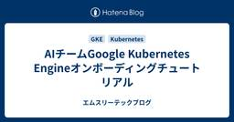
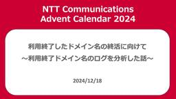
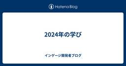

直近1週間の人気フィード
はてなブックマーク数を元に新着優先で並べ替え

ポリモーフィズムが1種類しかないと思ってたエンジニアの備忘録 126
126 株式会社ログラス テックブログのフィード
株式会社ログラス テックブログのフィード
!この記事は毎週必ず記事がでるテックブログ Loglass Tech Blog Sprint の72週目の記事です！2年間連続達成まで残り34週となりました！ はじめにソフトウェアエンジニアの福土（@ryoya_cre8or）です。ふと社内のSlackで「ポリモーフィズムを使っているときに、冗長になるコードをジェネリクスを使うことで綺麗にまとめる事ができる」と呟いたところ、「ジェネリクスもポリモーフィズムの1種だよ」とツッコミをいただき、それを機にポリモーフィズムの概念について整理したいと思っていたので、年末年始にオリャっとまとめちゃいます。実は共変性・反変性の概念を理解...
1日前

エムスリーのAI・機械学習チームって何やってるの？2024年1年間で作ってきた28個のプロダクトを大公開 57 エムスリーテックブログ
エムスリーテックブログ
こんにちは。エンジニアリンググループゼネラルマネジャー & 機械学習エンジニアの大垣です。 さて、私が機械学習エンジニアとして仕事をしているAI・機械学習チームでは、今年一年で28個のプロダクトをリリースしました。月に2つくらいは新規プロダクトが出てる計算ですね。なかなか高速にリリースできているのではないでしょうか。 なお、この1年で5名のメンバーが新規に加わり、チームが12人から17人になったので、来年は更に加速していきたいです！*1 これらのプロダクトを簡単にお見せしつつ、エムスリーという医療xWebの企業でMLのチームはどういう仕事をしているのか、というのをお届けできればと思います！ 多…
4日前

2024年のはてなスタッフのアウトプットまとめ 23 Hatena Developer Blog
Hatena Developer Blog
こんにちは、id:onk です。 去年 に引き続き、はてなスタッフの登壇まとめをします。去年は 88 件でしたが、今年は 119 件あるようです。実に 1.3 倍ですね。いや素朴に凄いな。発表の場が増えたのもあるし、発表しようと動いたのもあるなー、とまとめていて思いました。 それでは見ていきましょー。 1/12 ToKyoto.js #02 - Kyoto.js in Tokyo 1/26 Nextbeat Tech Bar：第五回関数型プログラミング（仮）の会 1/30 Hatena Engineer Seminar #28 個人開発編 1/30 Mackerel Drink UP #14 …
4日前

Findyのエンジニアおみくじの舞台裏を大公開！ 15 Findy Tech Blog
Findy Tech Blog
新年、明けましておめでとうございます。 ファインディ株式会社でフロントエンドのリードをしている新福(@puku0x)です。 今年も「エンジニアおみくじ」の季節がやって参りました 🎉 企画の詳細につきましては↓の記事をご参照ください。 findy-code.io 今回はエンジニアおみくじ開発の舞台裏をお話ししようと思います。 エンジニアおみくじとは 舞台裏① 企画からエンジニアが関わる 舞台裏② おみくじパターンは18万通り以上 まとめ エンジニアおみくじとは エンジニアおみくじは Findy で毎年1月に開催しているイベントです。 期間中にFindyへログインし、引いたおみくじをシェアすると抽…
3日前

AIチームGoogle Kubernetes Engineオンボーディングチュートリアル 25 エムスリーテックブログ
こんにちは。AI・機械学習チーム（以下AIチーム）チームリーダー、兼、エンジニアリンググループゼネラルマネージャーの横本(@yokomotod)です。 AIチームでは開発したMLプロダクトの実行基盤としてGoogle Kubernetes Engine（以下GKE）を採用しています。デプロイ関連コードのテンプレートも整備され、新しいプロダクトをスタートさせるときはGKE初心者でも簡単にデプロイまで持っていけるようになっています。 しかし自動生成は一方で、なにがどうなってデプロイされているのかブラックボックスのままになってしまいがちという問題もあります。 そこで今回は、チームメンバーへのオンボー…
5日前
半年間の運用で学んだDatastream導入の勘所 31 エムスリーテックブログ
こんにちは、エンジニアリンググループデータ基盤チームの木田です。先日公開されたCTO兼VPoP山崎の記事にある通りゼネラルマネージャーを拝命しまして、データ活用の観点だけではなくそれ以外の側面でも組織全体を支える立場となりました。クリスマスが過ぎ、すっかり街は年末モードになりましたね。毎年この変わり身の速さに驚くとともに、新年の足音を感じる時期でもあります。 門松とクリスマス飾りが同居する年末らしい光景。エムスリー赤坂オフィスから徒歩15分の距離にある麻布台ヒルズマーケットの一角にて エムスリーのデータ基盤利用者は今年も順調に増えまして、システム (サービスアカウント)も含めると倍々で増加して…
6日前

利用終了したドメイン名の終活に向けて 〜利用終了ドメイン名のログを分析した話〜 8 NTT Communications Engineers' Blog
NTT Communications Engineers' Blog
この記事は、 NTT Communications Advent Calendar 2024 の記事です。 みなさんこんにちは、イノベーションセンターの冨樫です。Network Analytics for Security1 (以下、NA4Sec)プロジェクトのメンバーとして活動しています。この記事では「利用終了したドメイン名の終活に向けて 〜観測環境を作った話〜」で紹介した観測環境から収集したログの分析結果について説明します。また、この分析の過程で利用終了ドメイン名を管理するにあたり有効なアクションを発見したので、それらについても一部紹介したいと思います。 ログの分析 DNSクエリの分析 W…
4日前

2024年の学び 3 インゲージ開発者ブログ
インゲージ開発者ブログ
どうも @shutooike です。 2024年もチームと個人の学びを雑に残しておきます。 来年の自分忘れんなよ^_^ 今年の挑戦 採用へのコミット 1つのプロダクトへの長期間のコミット コミュニティへの会場提供 チームの学び ストーリーポイントが不要になった まあ大体こんなもんでしょうで見積もれるように 1.5年ぐらい同じチームでやった経験から来るもの あと多少ストレッチな目標でも立ち向かいやすくなった 数値になっていると最初から無理だと決めつけてしまう 優秀な2-3人の開発者が最強 3人までだと互いの手を握れる人数（コミュニケーションパス3） 4人以上になると途端に把握するための工数、管理…
5日前
エムスリーの全員 QA 作戦 3 エムスリーテックブログ
皆さんこんにちは。エンジニアリンググループゼネラルマネージャー兼 QA チームリーダーの窪田です。 1年が経つのは非常に早く、やりたかったことをやれたのかと振り返る年末になりました。 本日は私が GM になる前から力を入れてきた活動「全員QA体制への移行*1」についてお話をします。 本内容は、12/24 に取締役CTO兼VPoPの山崎がブログで話題に挙げていた「組織的ステップチェンジ」の1つでもあり、組織的なインパクトも大きな活動です。 www.m3tech.blog はじめに 現状の開発フロー 全員 QA 体制への移行 決起集会（エンジニアリンググループミーティング） 方針・目標設定と周知 …
7日前